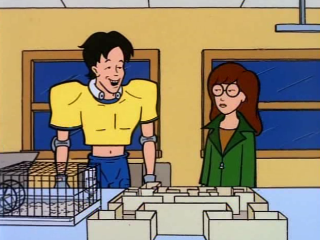

Episode Guide
Episode Guide
|  |
The Lab Brat Episode #107 - April 14, 1997 Written by Peggy Nicoll Song List Entries For This Episode Oops! List Entries For This Episode Transcript For This Episode |
|
Previous "This Year's Model" (#106) |
Next "Pinch Sitter" (#108) |
|
Cast |
|---|
|
Regular:
Daria,
Quinn,
Helen,
Jake,
Jane,
Brittany,
Kevin,
Jodie,
Upchuck,
Joey,
Jeffy,
Jamie,
Ms. Barch
Guest: None Non-Speaking: Mack, Andrea |
|
Plot |
|
Summary:
Daria and Kevin are forced to work together on a science experiment, causing Brittany to become jealous and prompting Quinn to do whatever she can to attract the Q.B.'s attention. |
|
Interesting Tidbits |
Continuity:
|
|
Memorable Quotes |
|
Ms. Barch - And like a husband going home to his noble and self-sacrificing wife, the rat keeps returning to the food box. That is, the positive reinforcement. Huh, if only men could be more like rats. Oh, sure, they come home at first. You feed them, you wait on them, and then, after twenty-two thankless years, they just up and leave. No note, no phone call, no nothing! (slams pointer on desk) Just... like... that! Daria (sotto voce, to Jodie) - I wonder why he left. Daria - Hmm... to make a child stop crying, a mother might say, "That's it! I'm sending you to El Paso to live with your real father." Whenever the child gets upset, the mother might wave an airline ticket in her face, or maybe even frame it on the wall by the clown picture. The ticket stops the girl from crying, or showing any emotion... ever. Ms. Barch - Right, that's... Daria - Years later, seeing an airplane or just hearing one fly overhead can unleash a Pandora's Box of repressed anger, shattering the grown child's fragile psyche and triggering a psychotic and possibly deadly episode. Ms. Barch - I like the way you think. Brittany - But babe, we've never been separated on a lab project before. What'll we do? Daria - Pass? Kevin - I really like doing mazes. Those ones on the back of cereal boxes are cool. Daria - Well, now I am excited. Daria - So, now Kevin's my lab partner. Jane - Next best thing to working alone. Daria - Oh, no. He likes mazes. Jane - Maybe you could get a wind-up toy to distract him. Daria - His wind-up toy is working with Upchuck. Helen - Science is fascinating. Tell me all about it, honey. Daria - I can't. I signed a confidentiality paper. The other scientists would be mad. Helen - (groans) Oh, forget it, Daria. Quinn, how was your day? Quinn - It sucked. First my teacher gave my paper on Cleopatra's makeup don'ts an "F" -- like he would know. Then my heel broke. Then, like, the day was almost over and only two guys had asked me out. Luckily, just before... Helen - Daria, please tell me about the project! Kevin - Hey! Is this the mouse we're training? Daria - You don't recognize him after all your hours together? Kevin - Hey, can you make him stand on his head? Daria - Not right now. He's exhausted from jumping rope. Jane - If you were really good, you'd get the mouse to stay off both paths -- you know, like Dada. Everything is useless. Daria - I wouldn't do that to the mouse, but it might be fun to try it on... Kevin - So, Daria, we still have a lot of work to do on this maze thing, right? Jake - My teen years... a nightmare of shame and guilt. They didn't call it self-love then, Kevin. They called it self-abuse. Daria - This is all very touching. Brittany, a deal. The mouse for Kevin. Brittany - Deal. Both - (thinking) Sucker. Brittany - Let's go, Kevin. Kevin - Daria, I can still come over and watch the Pigskin Channel, right? Both - (thinking) Jerk. Daria - In conclusion, this mouse -- through no fault of my own, Brittany -- was repeatedly abused by a ten-year-old boy. As a result, the mouse's primary response to everyday stimuli is fear. Similar reactions also occur in humans. Take the mugging victim, beaten with nunchaks in an alleyway. As he, or she, recalls the attacker's face -- his scraggly goatee and cheap, dangly earring -- she learns to hate and fear all men, regardless of age, race or taste in jewelry. Kevin - Really? Ms. Barch - Don't interrupt, hateful scum. Excellent job, Daria. You get an "A." Kevin - All right! Ms. Barch - Not you, you man. You get a "D." Kevin - All right! |
|
Mike Quinn's Delayed Reaction Review |
|
Self Examples:
Daria's example of reinforcement sound as if it could be something that describes her. I wouldn't even say anything, if the end of the example didn't go something like "and the grown child is incapable of showing any emotion" (that's a paraphrase). Some of the stuff she described sounded well within Helen's capabilities: tell her daughter she'll be sent to her real father and using a plane ticket to keep her quiet. Sounds like a lawyer. |